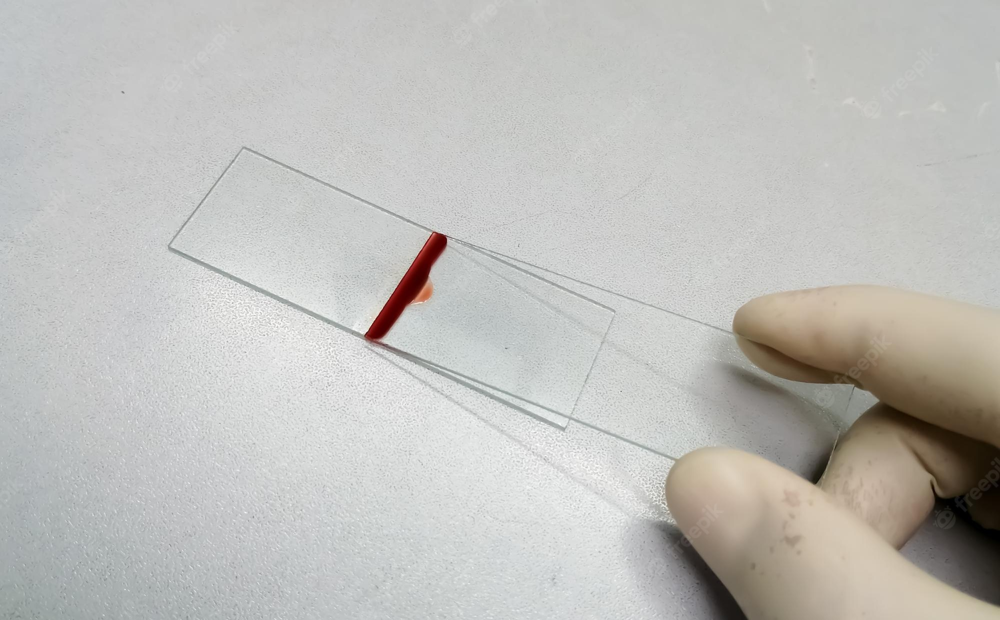
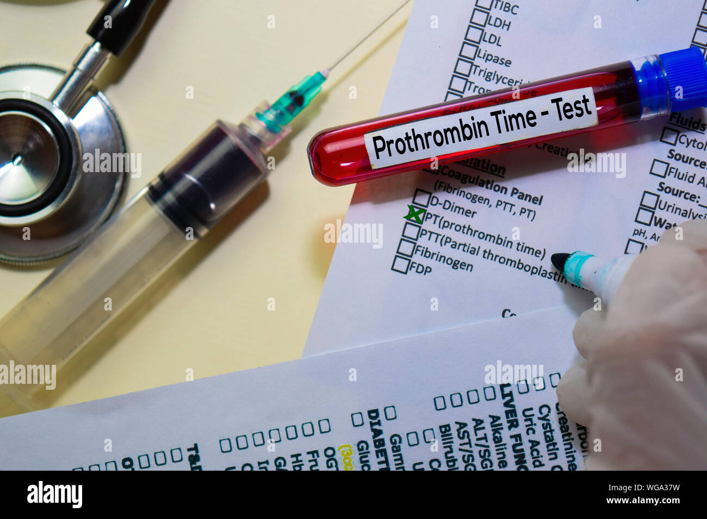
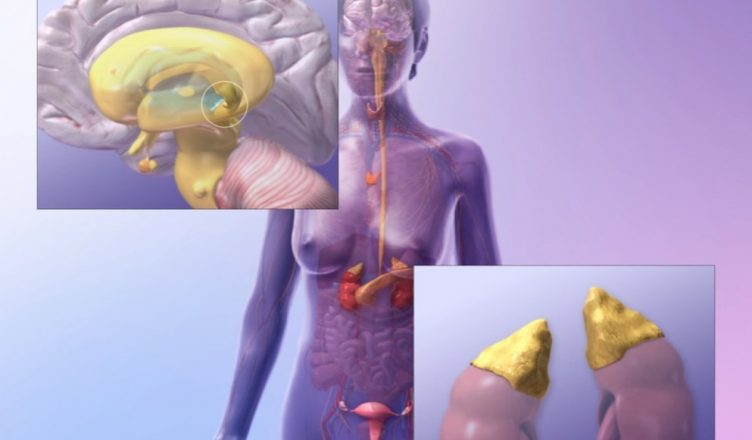
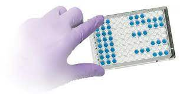
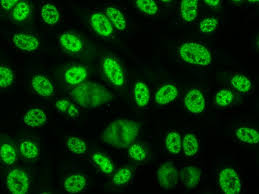
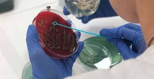

Estudios de Laboratorio
| Area | Estudios | |
|---|---|---|
| Hematología | Hemograma completo Morfologia Eritrocitaria Morfologia Leucocitaria Morfologia Plaquetaria Eritrosidemientación Dosaje de Acido Fólico y Vitamina B12 |
 |
| Hemostasia | Caogulograma Completo Anticoagulante Lúplico Dosaje de Fibrinogéno Dosaje de Dimero D |
 |
| Química Clínica y Drogas Terapeúticas | Glucemia y Hemoglobina Glicosilada Medio Interno Eje Renal Metabolismo Lípidico Metabolismo del HIerro Estudios en Orinas Minutadas: Clearence de Creatinina, Microalbuminuria y Proteinuria Metabolismo Hepatico Enzimología |
 |
| Endrocrinología y Marcadores Tumorales | Hormonas del eje Tiroideo y Marcadores Hormonas del Cliclo Reproductivo Hormonas Pancreaticas Marcaores tumorales: CA125, CA 19-9, CA 15-3, SHBG, CYPR, CEA, ALFA FETOPROTEINA Hormanas del metabolismo Oseo |
 |
| Inmunoserologia y Biología Molecular | Hormonas del eje Tiroideo y Marcadores p>Marcadores de Hepatitis B y CDiagnostico serológico para Chagas Diagnostico serológico para Sifilis Diagnostico serológico para antígenos Febriles Marcadores serológico agudos para Enfermedades Exántemicas (Rubeola y Sarampíon) Marcadores serológico de Dengue Agudo Inmunofluorescencia para Virus Respiratorios Carga virales de HIV y Hepatitis C (Programa Nacional) |  |
| Autoinmunidad y Proteínas | Hormonas del eje Tiroideo y Marcadores Auto anticuepos por Inmunofluorescencia Elisa para Autoanticuepos Extraibles Dignostico y seguimineto serológico para Enfermedad Celiaca Estudio electroforetico de Proteinas Sericas |  |
| Microbiología Clínica, Parasitología y Orinas | Cultivo de muestras de Orinas, Sangre y Tejidos Cultivo y Baciloscopias directa de muestras de esputo, tejidos y lavados gastrícos Cultivo asociados a la infertilidad Parasitología de muestras de materia feclaes Estudios de detección de Sangre en materia fecal Orina completa: Microscopía y Fisico-Químico |  |